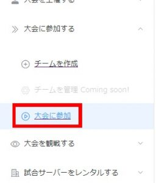

Project GIARSを使った大会の参加方法
このページでは、Project GIARSを使った大会への参加登録方法を解説します。
ログイン
Get5 webpanelへアクセスし、ページ右上のログインアイコンよりSteamアカウントを使用しログインを行って下さい。

初ログインの場合でも自動的にアカウントが作成されます。
チーム登録
大会に使用するチームの登録です。
ログインに成功したら、画面右上の[Create a Team]をクリックし、チーム作成用メニューを表示して下さい。

表示されたメニューの形式に従ってチーム情報を入力後、[Create] をクリックしてチームを作成してください。
プレイヤー欄に使用するSteamID64の形式はこちら をご確認ください。
| Team Name | 大会時に使用するチーム名です。 |
|---|---|
| Team Tag | ゲーム内に表示されるクランタグです。 |
| Logo Name | 空白で構いません。 |
| Country flag | 空白で構いません。 |
| Player1~7 | 大会に参加するプレイヤーのSteamID64を入力して下さい。 |
| Public Team | デフォルト(チェックが外れている状態)で構いません。 |
作成したチームは画面右上[My Teams]より編集・削除が可能です。
参加
大会当日、大会に参加するワークフローです。
Project GIARSへアクセスし、ページ左下[設定] より[ログイン]をクリックし、SteamIDを使用してログインしてください。
その後、ページ左上[大会に参加する]、[大会に参加] よりをクリックし、大会リストを表示して下さい。


トーナメントのリストが表示されます。
参加する大会の右側 [参加] ボタンをクリックし、大会の概要を表示して下さい。
大会概要が表示されたあと、ドロップダウンメニューより自分のチームを選択し、[参加] ボタンをクリックすれば参加登録が受け付けられます。